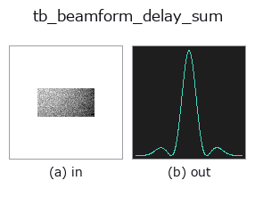

typed op• 資料種類:beatcube → signal
• 呼叫:fullseye.apply(img, "tb_beamform_delay_sum", a=0.5, b=0.5)(2-D 的模型是一張圖 + 兩個純量旋鈕 a,b∈[0,1])

*圖為在 128×128 合成輸入上實際執行的輸出。左為輸入，右為輸出。點雲以俯視散點顯示(亮度 = z)，一維序列為折線，體資料為沿 z 的最大值投影，影片為中間影格，複數影像為振幅；無法成像的回傳值直接顯示數值。*
掃描旋鈕 a(0.1 / 0.5 / 0.9，另一旋鈕取預設):
▸ tb_beamform_delay_sum: knob a sweep (docs site)
*旋鈕 b 不改變輸出(實測: 0.1 / 0.5 / 0.9 相同)。*
階段(前置運算子 → 本運算子，由左至右):
▸ tb_beamform_delay_sum: stages (docs site)
換別的影像(合成場景 / 照片 / 硬幣。上排為輸入，下排為對應輸出。旋鈕取預設):
▸ tb_beamform_delay_sum: other inputs (docs site)
針對單一距離-都卜勒格點的延遲求和（Bartlett）角度譜。
> 以下的詳細說明為原文 —— 摘要與標題已翻譯。
Takes the per-antenna complex value at a single range-Doppler cell — by
default the strongest one — and for each steering angle removes the expected
inter-element phase and sums:
`P(theta) = |sum_k conj(exp(1j*2*pi*d*k*sin(theta)/lambda)) * x_k|^2`
which peaks at the true arrival angle with value `(N_a * |a|)^2`: the
aperture gives `N_a in amplitude, N_a^2` in power. That is the exact
ground truth the tests pin. Measured with 8 elements: the peak power is
bit-exactly `(N_a*N_c*N_s)^2 = 268435456` (relative error 0.0), and
sweeping the true angle from -80 to +80 degrees in 5-degree steps (33 cases)
the reported angle matches the truth with a maximum error of 0.0 degrees.
The steering grid defaults to `arange(-90, 90.5, 1.0). normalize=True`
divides by `N_a^2 * N_c^2 * N_s^2` so that a unit-amplitude bin-centred
target peaks at 1.0.
Returns a 1-D float64 array of powers, one per grid angle — a plain signal,
so :mod:dsp's `find_peaks and :mod:funct1d`'s smoothing apply to it.
Use :func:beamform_doa if you want the angles themselves.
*range_bin* is a plain `0..N_s-1` index; *doppler_bin* is the signed
velocity bin, the same convention :func:range_doppler_peaks reports, so a
detection can be handed straight back in. Both or neither — half a cell
address raises rather than quietly beamforming the strongest cell instead.
Raises `ValueError`: no aperture — either a single element, or many
elements packed into under ~0.28 wavelengths. In both cases the spectrum is
flat to within float noise and `argmax` returns the first grid angle, i.e.
a confident report of -90 degrees that is pure tie-breaking (measured: 8
elements at 1e-12 m spacing gave a peak-to-trough spread of exactly 0.0 and
reported -90.0). Also: an all-zero cube or an all-zero selected cell; only
one of *range_bin* / *doppler_bin*; an out-of-bounds bin index; an angle grid
outside `[-90, 90]`; an FFT that overflows to NaN; plus the usual cube and
scalar refusals.
Typed bridge of the rangedoppler op `beamform_delay_sum into the 2-D evolution registry: the same implementation, called under the op(v, a, b) convention. a drives wavelength_m (default 0.0038934); b` is unused.
• 範例資料目錄(下載 URL / 授權) —— 2-D 用 skimage.data(BSD/公有領域)加合成圖,3-D 給出真實資料源(Stanford/PDS 等)的下載 URL。
• 運算子來歷與參考文獻 —— 該運算子族所依據的研究/方法出處。
下面的程式已確認可以執行(與圖相同的輸入)。在 Studio 說明中，此區塊會變成按鈕，可當場載入並執行。
img_to_beatcube 0.50 0.50 tb_beamform_delay_sum 0.50 0.50
▸ Load this pipeline · Load & run
下面的範例呼叫的是底層帳本運算子 beamform_delay_sum。此橋接運算子只是把同一實作適配為 fn(v, a, b) 慣例，行為完全相同(只是呼叫形式不同)。
• fmcw_range_doppler — py -3.11 examples/fmcw_range_doppler.py
signal 作為輸入)identity · tb_create_funct_1d_array · tb_smooth_funct_1d_gauss · tb_smooth_funct_1d_mean · tb_derivate_funct_1d · tb_integrate_funct_1d · tb_zero_crossings_funct_1d · tb_abs_funct_1d
typed)tb_points_to_voxel · tb_estimate_point_normals · tb_iss_keypoints · tb_angle_3points · tb_project_points · tb_render_point_depth · tb_statistical_outlier_removal · tb_radius_outlier_removal
*Provenance: ops.py — 2D 運算子登記表。本條目由 tools/opdocs.py md 自動產生(請勿手動編輯)。*
© 2026 Kazufumi Furuse — Fullseye operator documentation. Licensed under Apache-2.0.
{kind=link}
{kind=link}
{kind=link}